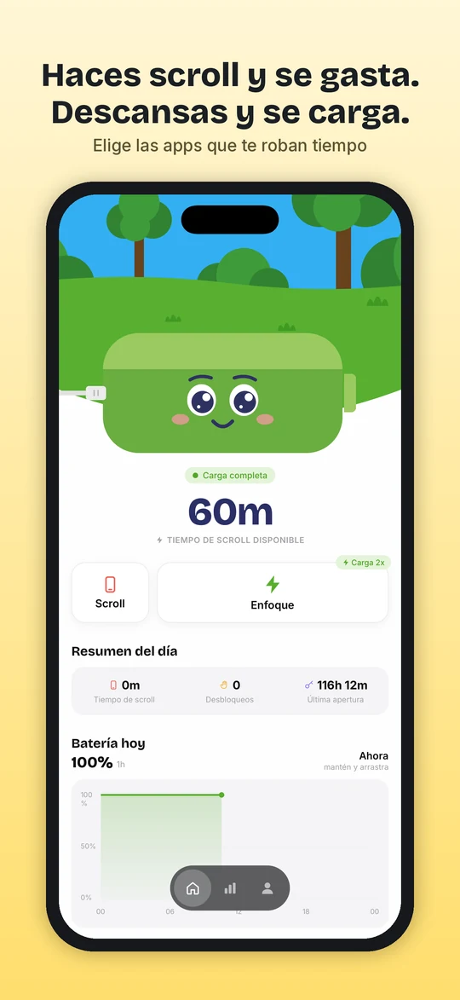

App de detox digital para iPhone, sin dejarlo de golpe
Un detox digital no tiene por qué ser un fin de semana con el móvil en un cajón. El que de verdad dura suele ser diario: menos scroll sin sentido y más tiempo para todo lo demás.
Planifica un detox que puedas mantener
- Elige las pocas apps que más tiempo te roban y deja en paz las útiles.
- Fija un presupuesto diario en lugar de una prohibición total.
- Reserva bloques sin móvil para entrenar, estudiar o trabajar concentrado.
- Reduce poco a poco, unos minutos cada día.
- Revisa tu semana para ver tus avances.
Cómo te ayuda ScrollVolt
ScrollVolt cubre cada uno de estos pasos. Las apps que eliges comparten una batería de scroll que se gasta al usarlas y se recarga sola durante el día. Tú decides cuántos minutos desbloquear arrastrando la batería, y a cero una pantalla tranquila sustituye a la app. Las sesiones de enfoque mantienen bloqueadas las apps que distraen mientras entrenas o estudias, y cargan la batería el doble de rápido. El Reto de la Mitad baja tu límite diario 5, 10 o 15 minutos al día, y la tendencia semanal te muestra si está funcionando.


Y respeta tu privacidad: ScrollVolt se basa en los frameworks de Tiempo de uso de Apple y todo funciona en tu iPhone, sin cuenta, sin rastreo y sin anuncios.
Preguntas frecuentes
¿Qué es un detox digital?
Una pausa consciente de las pantallas, o de ciertas apps, para reajustar tus hábitos. Puede ser un día entero sin móvil o un límite diario más pequeño.
¿Tengo que bloquear todo el móvil?
No. En el día a día, ScrollVolt solo limita las apps que eliges. Todo lo demás funciona como siempre.
¿ScrollVolt está en español?
Sí. La app está disponible en español, inglés, alemán y turco.
Prueba ScrollVolt en tu iPhone
ScrollVolt Premium es una suscripción anual con 3 días de prueba gratis que puedes cancelar cuando quieras en los ajustes de tu cuenta de Apple. ¿Prefieres pagar una sola vez? También hay un desbloqueo vitalicio.
Descárgalo en elApp Store